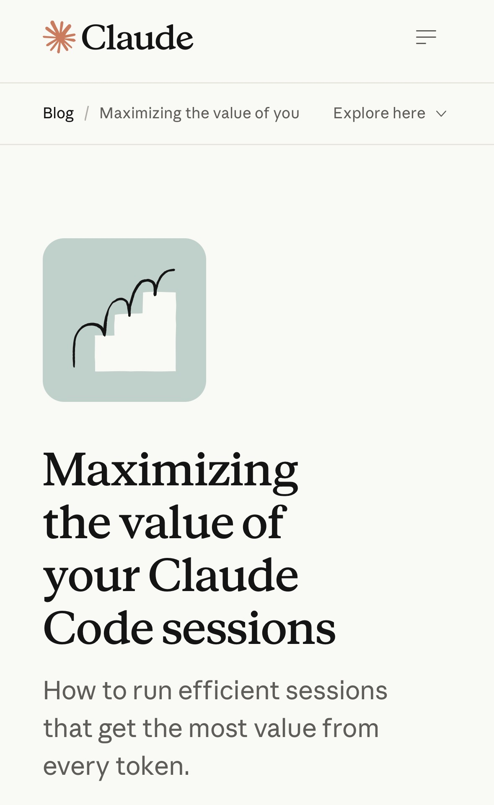

讀書筆記 ·
Chris 筆記｜如何讓你的 Claude Code 工作階段（session）發揮最大價值｜Claude by Anthropic
原文：claude.com · @claudeai
我的想法
對我來說，這個提及文件的@，以及sub-agent的用法都是很有用的。尤其是我經常需要引用文件。
用 @：「幫我改一下 @src/lib/config.ts」→ 按下 @ 時編輯器會跳出檔案清單讓你選，選完內容直接附在訊息裡送出。Claude一收到就已經看得到全文，省掉搜尋跟讀取那幾步。不過也有例外，幾個反而不加 @ 比較好的情況：
• 超大檔案：@ 是整份塞進來，Read 可以讓 Claude 自己判斷只讀某個範圍，反而更省。
• 長對話中檔案會變動：@ 是你按送出當下的快照；Read 是 Claude 執行當下讀，拿到的是最新版。如果剛改完檔案、你要 Claude 接著看，講路徑比 @ 安全。

摘要 / Summary
這篇 Claude Code 官方部落格文章拆解了一次 session 實際在付什麼錢：token 的單價由模型大小、輸入或輸出、以及有沒有命中 prompt cache 三件事決定，其中輸出 token 因為要一個一個解碼產生，價格大約是輸入的五倍；而快取讀取只要輸入價的十分之一，但任何動了請求「更靠前」部分的動作——切換 /model、/effort、開 fast mode，或是 /compact——都會讓後面整段對話重新以全價 prefill。文章接著指出，真正決定一次 session 花多少的，其實是「什麼東西進了 context、它會停留幾個回合」：Claude 讀過的每個檔案、跑過的每一次指令輸出，都會在此後的每一個回合被原樣重新送出一次，直到 session 結束為止，所以同一個 bug 用 grep 摸索十幾個檔案去修，跟直接 @ 提及目標檔案去修，實際花費差很多。
文章給了一串具體技巧：任務之間跑 /clear、開始前一次把 model 與 effort level 定下來、用 @ 提及檔案取代打路徑省下一次 Read、把常跑的吵雜指令連同安靜旗標寫進 CLAUDE.md、在全新 session 跑 /context 檢查啟動時已經載入了什麼、離開鍵盤前趁快取還在時先 /compact 而不是回來才做、只想丟掉最近幾回合時用 /rewind 而非重寫整段對話的 /compact。另外也提到 subagent 是把吵雜輸出擋在主 context 之外的方法——它有自己獨立的 context window，結束後只有答案回到主 session，其餘一律丟棄，適合拿來看 log 這類會產生大量不需要留著的輸出的工作。
整體而言，這篇文章把「token 用得有效率」重新定義成「每個進到 context 的 token 都花在你真正要求的事情上」，而不是單純追求總量少，並用一次修測試的五輪請求拆解，具體示範了每一輪哪些是快取讀取、哪些是全價 prefill、哪些是輸出。
分享用短連結：https://os.housearch.net/n/4